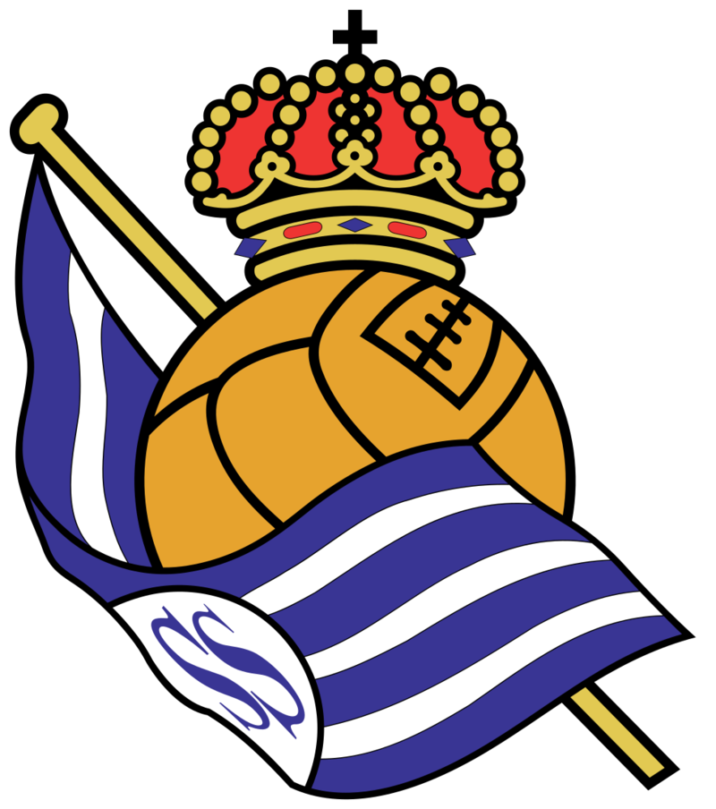
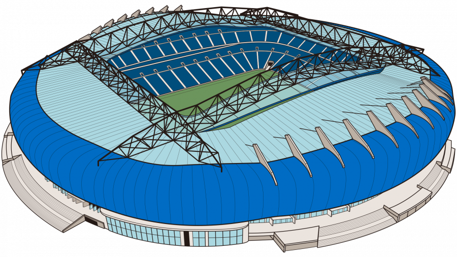
Dettagli Squadra
Imanol Alguacil
Jokin Aperribay Bedialauneta
1909
Estadio Municipal de Anoeta
Portieri
1 Álex Remiro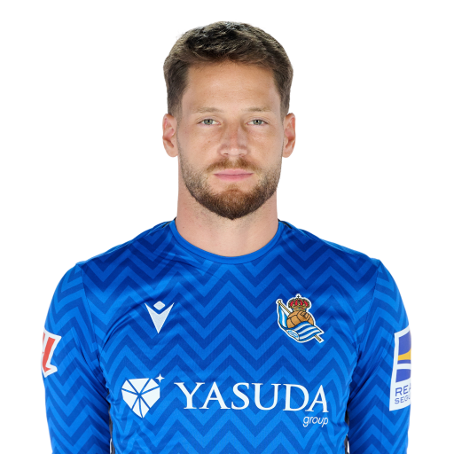
13 Unai Marrero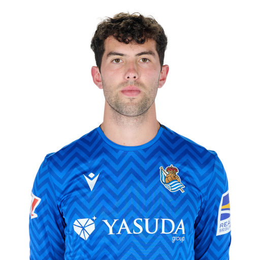
Difensori
2 Álvaro Odriozola (TD)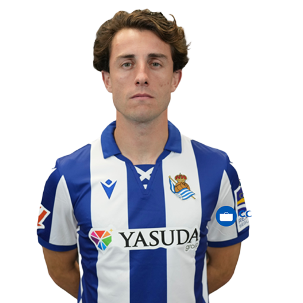
3 Aihen Muñoz (TS)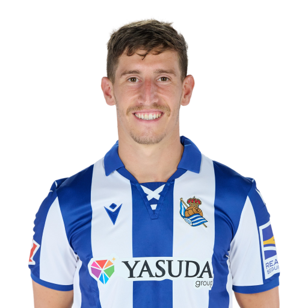
5 Igor Zubeldia (DC)
6 Aritz Elustondo (DC)
8 Nayef Aguerd (DC)
12 Javi López (TS)
18 Hamari Traoré (TD)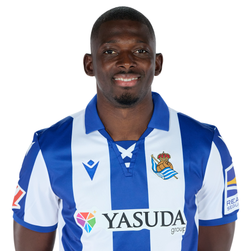
20 Jon Pacheco (DC)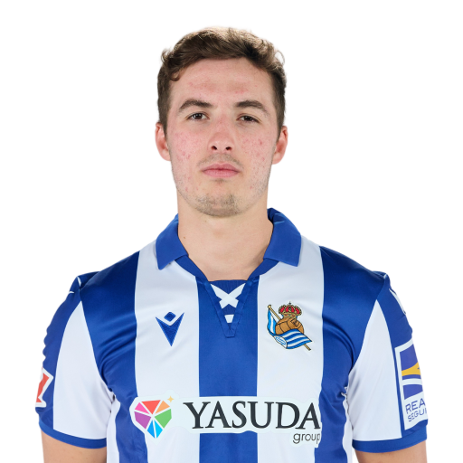
26 Jon Aramburu (TD)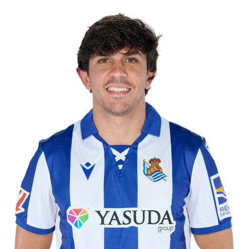
Centrocampisti
4 Martín Zubimendi (CC)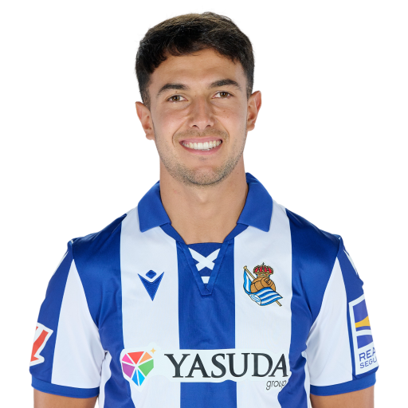
15 Urko González de Zarate (CC)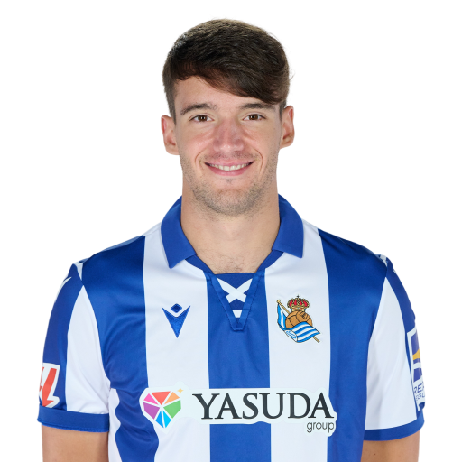
16 Jon Ander Olasagasti (CC)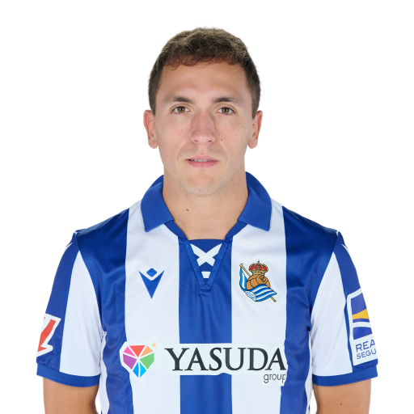
21 Arsen Zakharyan (TQ)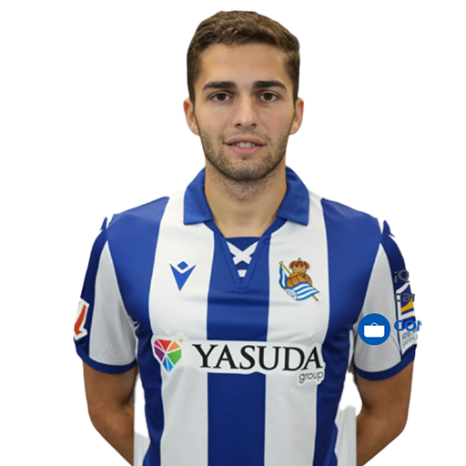
22 Beñat Turrientes (CC)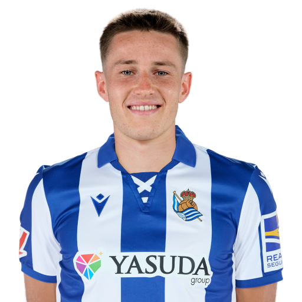
23 Brais Méndez (TQ)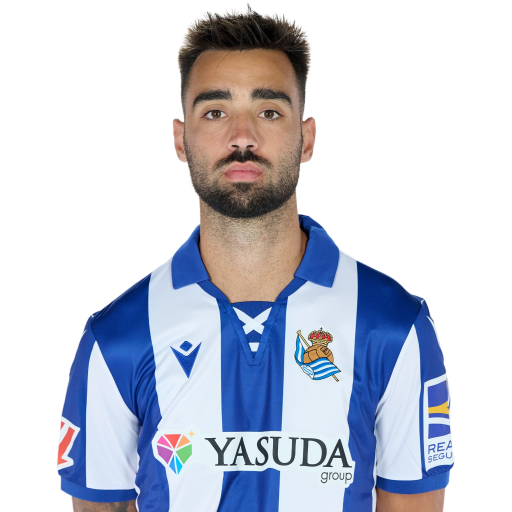
24 Luka Sucic (CC)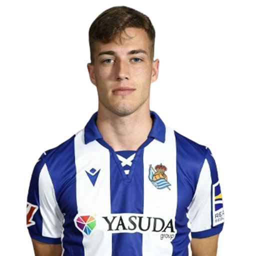
25 Jon Magunazelaia (TQ)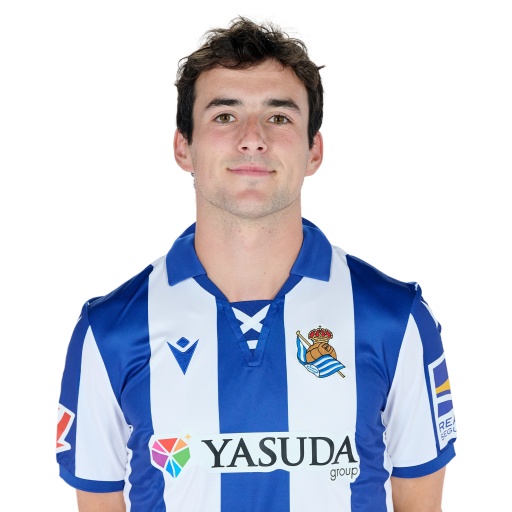
28 Pablo Marín (TQ)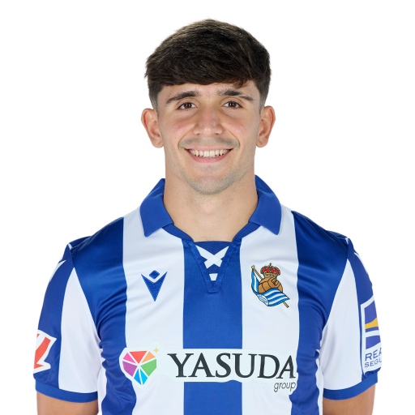
Attaccanti
7 Ander Barrenetxea (AS)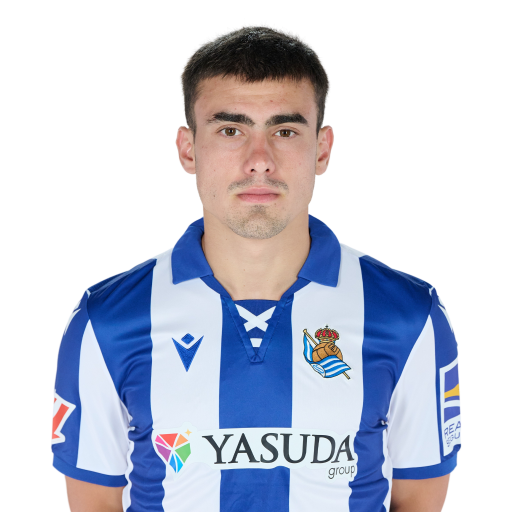
9 Orri Óskarsson (AT)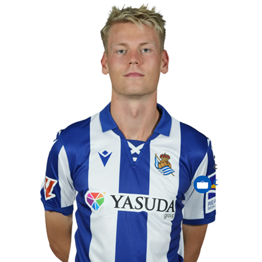
10 Mikel Oyarzabal (AT)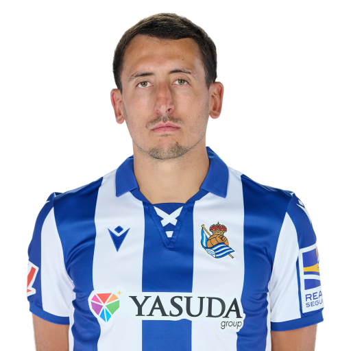
11 Sheraldo Becker (AT)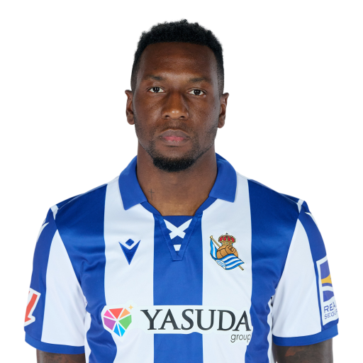
14 Takefusa Kubo (AD)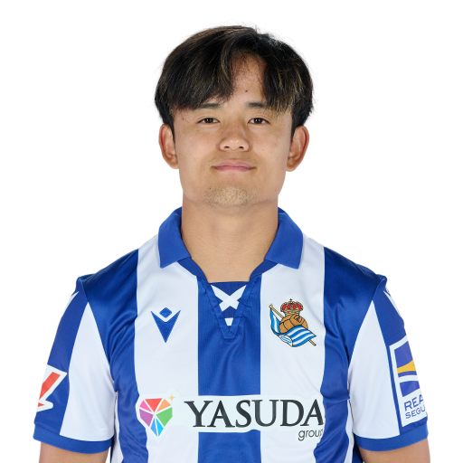
17 Sergio Gómez (AD)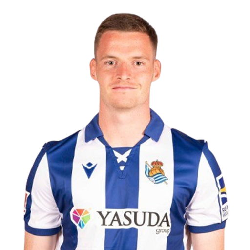
19 Umar Sadiq (AT)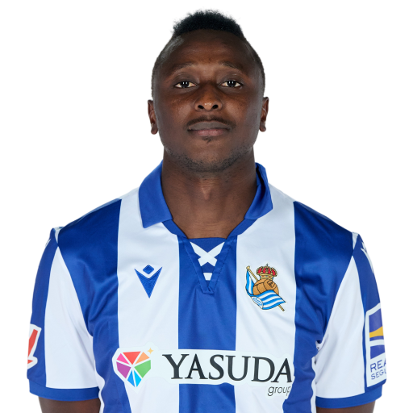